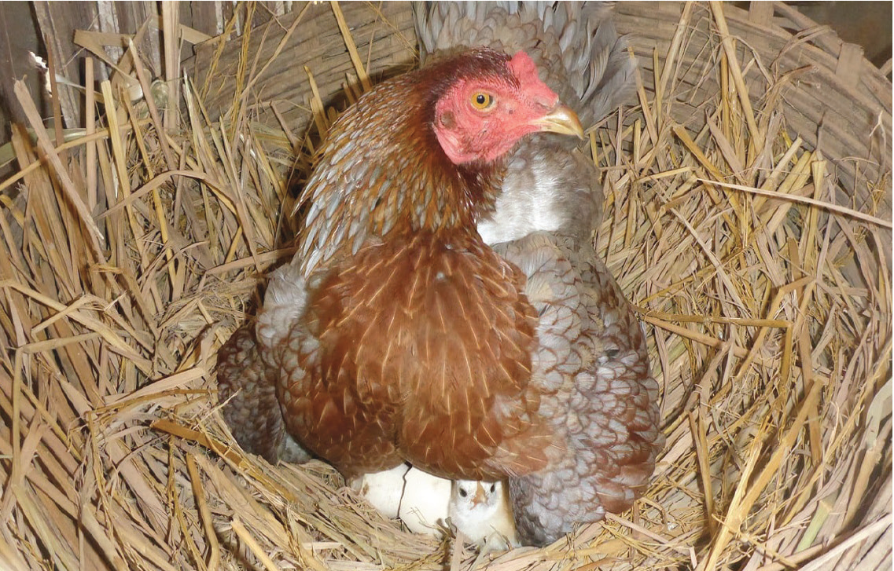
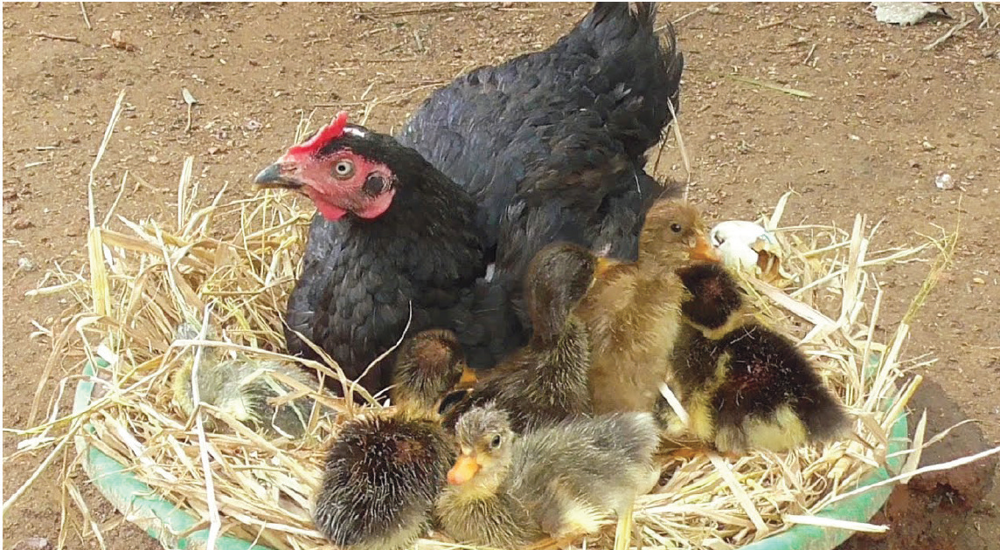

Table 9.1: Incubation periods for different poultry species
| Poultry species | Incubation period (days) |
|---|---|
| Chickens | 21 |
| Ducks, Geese, Turkeys, & Guinea fowls | 28 |
| Pigeons | 17 - 19 |
| Peafowls | 26 - 28 |
| Pheasants | 24 |
| Quails | 16 - 24 |


Advantages of natural incubation and brooding
- (a)The system does not require high costs for investment.
- (b)With suitable conditions, hatchability is higher than artificial incubation.
- (c)It applies to small-scale poultry breeders/home flocks.
- (d)No specific skills are required.
Disadvantages of natural incubation and brooding
- (a)Possibility of disease infection and parasitic infestation is high.
- (b)Broody bird takes care of a small number of eggs.
- (c)Broody bird may die before hatching thus losing the whole batch.
- (d)Hatching may be poor due to an uncontrolled environment.